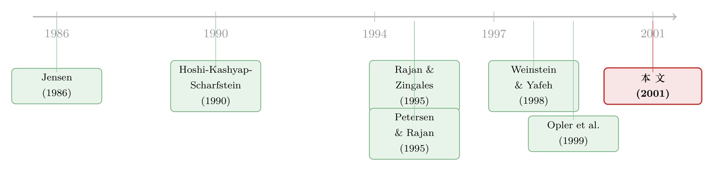

现金为什么堆在日本公司的账上？——一笔被强势银行『劝』出来的窖藏
本文读的是 Pinkowitz & Williamson (2001, Review of Financial Studies)：日本工业企业账上堆着远超美、德同行的现金，而这不是「主银行制更高效」的勋章，恰恰相反——是拥有垄断权力的主银行，把企业「劝」成了替自己揽储、降险、省监督成本的现金窖藏；等银行权力在 1980 年代之后被削弱，日本企业的现金水平就慢慢向美国靠拢。
1 一个反直觉的开场
先说一个被人引用过无数次的事实。Rajan 和 Zingales（1995）在那篇著名的资本结构国际比较里顺手记下一句话：1991 年，日本工业企业账上的现金占资产比例，几乎是任何一个 G7 国家的两倍。
于是一个再自然不过的问题摆在面前：日本公司为什么要囤这么多现金？
要回答它，得先把美、日两套公司治理的根本差别摆清楚。在美国，资本市场是主要的监督者——分散的股东、分散的债权人，谁也没动力去盯紧管理层，于是产生各式各样的代理成本（这正是 Berle 和 Means 在 1932 年就开始担心的事）。而在日本，主银行（main bank）才是企业的首席监督者和纪律执行人：银行既放贷又持股，行员常常坐进董事会，甚至直接参与管理。按理说，主银行制应当同时压低信息不对称和管理层的浪费行为。
顺着这个逻辑往下推，结论几乎是写好的：日本企业应该比美国企业持有更少的现金。因为监督到位，代理冲突小，预防性囤现金的必要也就小了——这里说的预防性动机（precautionary motive），按 Opler 等人（1999）的定义，就是「在现金流不好时仍能投资」而预留的钱。既然主银行会在你困难时托底，你又何必自己攒一大笔救命钱？
可是数据偏偏打了脸。日本工业企业不是更少，而是显著更多地持有现金。这就是整篇论文要解释的那个刺眼的结果。
2 把账摆到三国的桌面上
接着，一个自然的问题是：会不会是「银行中心」这件事本身就让企业爱囤现金？如果是，那同样以银行为中心的德国，应该跟日本长得差不多才对。
于是作者把德国拉了进来，做一次美、德、日三国的横向对照。
先看口径——这一点很关键，因为它决定了整个比较是否「偏向」了某个方向。在美国和德国，现金（cash）指的是「现金 + 有价证券」；而在日本，由于企业之间存在大量交叉持股，作者只把「手头现金」算作现金，不含有价证券。换句话说，日本的现金被「往小了算」。这意味着，如果数据仍然显示日本现金更高，那它只会被低估，不会被高估。
结果如何？均值上，日本是 18.52%，美国 18.03%，德国 12.17%。但均值会被少数极端值带偏，真正说明问题的是中位数：日本中位数 15.74%，而美国只有 6.05%、德国 6.63%。也就是说，中位数的日本企业，持有的现金大约是中位数的美、德企业的 2.5 倍。而且分位数逐档看下来，美、德两国相当接近，唯独日本在每一个分位上都更高。
这里出现了第一个反转：德国同样是银行主导的体系，现金水平却跟美国几乎一样。那套「主银行监督更高效、所以现金应该不同」的故事，在德国这里直接讲不通了。问题于是被逼到一个更尖锐的位置——真正特殊的不是「银行中心」，而是日本。
为了堵住「也许日本企业只是更怕现金流波动」这条退路，作者还看了一个变量：行业现金流波动率（industry σ）。结果是美国企业面对的现金流波动，大约是两个外国同行的四倍。按预防性动机，该囤现金的明明是美国人才对。可现实是波动小得多的日本企业囤得最凶。预防性动机这条线，也断了。
还有一个细节耐人寻味：论文发现，最有能力派现的日本企业，偏偏派得最少——德国企业的平均派现额是日本企业的约 80 倍。钱明明能分，却死活攥在手里。这个「能分而不分」的反常，正是后面那条解释线的引子。
3 真正关键的一步：把镜头对准银行自己
排除掉「高效监督」和「预防性动机」之后，作者把矛头转向一个被前面那套乐观叙事系统性忽略的角色——银行自己。
主银行制有一个隐藏的漏洞：谁来监督主银行？如果没有一个对银行的显性或隐性约束，那么银行完全可以采取行动，让自己受益而牺牲它所「监督」的那家企业。Weinstein 和 Yafeh（1998）已经给过一个扎心的证据：在银行强势的年代，有主银行关系的工业企业，业绩反而跑输没有主银行关系的企业——那些本该属于企业的收益，被主银行通过利率、通过诱导企业大量使用银行融资的资本投入，给抽走了。他们把这叫「租金攫取」（rent extraction）。
那么，现金持有能不能成为攫取租金的一条通道？作者的回答是：能。而且机制干净得近乎残忍。
先看派现这条路。 假设银行持有某企业 5% 的股权。如果企业把多余的现金作为股利派出去，银行只能按持股比例拿到其中的 5%；剩下 95% 流向了别的股东，银行只能拿这 5% 去放贷（还要扣掉准备金）。
再看囤现这条路。 如果企业一分不派，把现金以存款形式存在主银行，那么银行就掌握了这笔现金的 100%，可以转手贷给别的企业。两条路的对比，简单到可以写成一行：
$$\text{dividend route: } \alpha \cdot C \qquad \text{vs.} \qquad \text{deposit route: } C$$
这里 \(C\) 是企业那笔多余现金，\(\alpha\) 是银行的持股比例（比如 5%）。只要 \(\alpha < 1\)——而它总是远小于 1——银行就更希望企业囤着别分。更狠的是，凭借垄断地位，银行还能对存款支付低于市场的利率，于是每一块存进来的钱，都额外补贴了银行一道。如果银行派发股利还要交税，那它更有理由把企业的现金留在自己的资产负债表上。
但事情还有另一面：企业囤了现金，自然就不需要那么多银行贷款了——这对银行是一笔损失，丢掉了潜在的放贷生意。所以银行其实在做一道权衡：理想状态是企业既把现金窖藏起来、又用银行融资去做正净现值（NPV）项目。而这种「我全都要」的局面，只有在银行拥有垄断权力、能够诱导企业这么做时才可能出现。
这就把整条逻辑和 Petersen 与 Rajan（1995）接上了头：银行能攫取的租金，与它所在信贷市场的竞争程度直接相关——市场越不竞争，租金越厚。而日本因为系族（keiretsu）结构和管制环境，银行间几乎不存在竞争（论文样本里 48.84% 的企业属于某类系族，银行债占总债务高达 88.40%）。于是结论顺理成章：正是日本主银行的垄断权力，把企业的现金水平顶到了远超美国代理成本所能解释的高度。（关于银行为什么会在「关系」里做这种长线权衡，可参见《银行从哪里来，又为什么不肯把生意做绝？》。）
还有第二条同向的理由：日本银行持有的企业债务通常多于股权。企业账上常备一大笔现金，会降低自身违约概率，从而抬高债务的价值；而在主银行制下，银行被期望在企业陷入困境时出手相救（Hoshi, Kashyap & Scharfstein, 1990 给过证据），违约对日本银行而言比对美国银行更昂贵——它不仅要损失贷款，还可能搭上声誉、甚至替企业偿还对外负债。于是银行有强烈动机要求企业囤现金来防患于未然。租金攫取假说和「降低财务困境成本」假说，对现金的预测方向是一致的——但无论动机为何，受损的都是中小股东。
4 决定性的证据：让时间来作证
讲到这里，故事其实还缺最后、也是最有说服力的一块拼图。前面都是横截面的对照，而横截面比较总免不了被各种国别差异污染。真正关键的一步在于：银行的权力本身在时间上发生过变化——如果现金真是被银行权力顶上去的，那当银行权力消退时，现金就该跟着回落。
历史恰好提供了这个准自然实验。二战后到 1970 年代，债券市场被压制、企业极少发行股票，银行垄断了整个金融体系。进入 1970–1980 年代，一连串管制放松把局面改写了：能发行公开非可转换债的企业数量，从 2 家暴增到 500 多家；上市变得更容易；银行能持有单一企业股份的上限被调低（1987 年从 10% 降到 5%）；利率从 1980 年代中期开始逐步市场化，到 1993 年完成。投资者有了银行存款之外的更高回报选择，银行的权力被一点点侵蚀。到 1990 年代初，日本银行体系自身的健康都成了问题。
那么现金呢？完全符合银行权力假说：日本企业在 1970 年代持有的现金，显著高于 1980 年代末和 1990 年代；后期现金虽仍偏高，但已明显向美国水平靠拢。
更漂亮的是债务那一边。后期企业的债务水平也显著更低——这支持了一个很微妙的论断：当银行强势时，它宁愿企业把现金囤起来，也不愿企业拿去还债。 而当作者进一步看「银行债」这个更精准的变量时，从前期到后期的下降更加陡峭。这与 Hoshi 和 Kashyap（1999/2000）的发现一致：能够进入公开市场的非银行企业，从 1980 年代末开始大幅削减了银行融资。一旦企业有了银行之外的出路，那笔被「劝」出来的现金窖藏，也就守不住了。
于是整个故事在时间维度上闭环了：现金的潮起潮落，跟着银行权力的强弱同步呼吸。
5 文献脉络
把这条线索捋一遍，会看到它是两股研究在 2001 年的交汇。
一股是现金持有的研究。Jensen（1986）的自由现金流理论奠定了底色——手握过多现金的管理层，会倾向于浪费（关于这一点，可参见《现金为什么一定要「还」出去？——四十年后，重读 Jensen 的自由现金流》）。Opler、Pinkowitz、Stulz 和 Williamson（1999）则系统地刻画了美国企业现金持有的决定因素与动机，本文的变量定义、用净资产（assets − cash）做分母的做法，都直接承袭于此。本文两位作者随后还把这条线推向「现金到底值多少钱」的国际比较（见《现金握在谁手里，决定了它值多少钱》）。
另一股是日本主银行制的研究。早期的乐观叙事——Hoshi、Kashyap 和 Scharfstein（1990, 1991）——强调主银行能缓解财务困境、降低投资对内部资金的依赖。但 Weinstein 和 Yafeh（1998）提供了反面证据：银行强势时，主银行关系是在向制造业「抽血」。而 Petersen 和 Rajan（1995）关于信贷市场竞争与租金的理论，给了「银行权力如何变现」一个通用的微观机制。Rajan 和 Zingales（1995）那句关于日本高现金的随手观察，则是点燃整篇论文的火星。
本文（Pinkowitz & Williamson, 2001）站在这两股研究的交点上：它把「现金持有」当作主银行攫取租金的具体通道，并用银行权力的时间变化，给出了横截面证据之外的纵向验证。

6 评论与延伸（Q&A + 研究方向）
（a）几个可能的疑问
Q：日本现金口径明明「往小了算」，可均值上日本（18.52%）和美国（18.03%）几乎一样，凭什么说日本更高？
关键在中位数而非均值。美国均值被一小撮极端高现金的科技/小公司拉高，中位数只有
6.05%；日本中位数则有15.74%，约为美国的 2.5 倍。再叠加日本口径不含有价证券这一向下的偏差，真实差距只会比账面更大。均值接近是分布形状不同造成的假象。
Q：这跟 Jensen 的自由现金流故事有什么区别？不都是「现金太多惹的祸」吗？
方向正相反。Jensen 说的是管理层为了自己的私利囤现金、挥霍现金，受益者是内部人。本文说的是银行为了自己的利益把现金「劝」进企业账上——受益者是外部的主银行，企业管理层在这里更像是被说服的一方。两者都让中小股东受损，但攫取租金的主体不同。
Q：德国也是银行中心，凭什么德国不囤现金？这会不会说明问题不在银行？
恰恰相反，德国是关键的对照组。德国虽以银行为中心，但有一系列制衡银行的力量：双层董事会让员工进入监事会、缺少 keiretsu 式的紧密交叉持股，尤其常有大型非银行积极股东推动派现。所以德国银行权力被牵制，现金不高。日德差异说明：起作用的不是「银行中心」这个标签，而是银行有没有不受约束的垄断权力。
Q：1970 年代现金高、之后回落，会不会只是宏观经济或利率周期，而非银行权力？
这是最该担心的混淆。作者的应对是看多个同向变量：不仅现金下降，债务、尤其是银行债也在后期显著下降，且时点与一连串可考证的去管制事件（公开债发行资格放开、持股上限下调、利率市场化）对齐。单看现金可以有别的解释，但「现金 + 银行债同步下降 + 恰好踩在去管制时点上」这组组合，更难用纯利率周期搪塞。当然，这仍是叙事性识别，而非干净的断点。
Q：会不会日本现金高只是因为公司大、或者别的公司特征？
作者特意指出：Opler 等（1999）和 Mulligan（1997）都发现越大的公司现金占比越低（规模经济）。而日本公司平均比美国公司更大。所以若按规模，日本本「应」更低——这让日本的高现金更加反常，而不是被规模解释掉。市场账面比在三国间也相近，排不出这个差。
Q：这篇文章对「日本治理模式优越论」意味着什么？
它是一记正面反驳。1990 年代之前，主银行制常被当作优于美国分散治理的样板。本文的含义是：当一个体系里只剩银行这一个监督力量、而没有大的非银行股东或发达资本市场来制衡它时，这套体系自身会长出代理成本——只不过成本的攫取者从管理层换成了银行。
（b）几个可能的研究问题与提案
-
【把镜头搬到中国的银行—企业关系】 经济故事：中国企业同样以银行融资为主、银行竞争受限，且国有银行与国有企业之间存在类似的「软约束 + 关系」结构。若银行权力会推高现金，那么银行业市场化改革（如利率市场化、民营银行准入）应当伴随企业现金/银行债的下降。可行性：中——上市公司财报和银行业改革时点都可得，但「银行权力」缺乏干净的外生冲击，需借助分地区、分行业的改革节奏构造 DiD，内生性仍需小心处理。
-
【现金窖藏对外资持有人的含义】 经济故事：本文说现金被银行「劝」出来、伤害中小股东。那么当外资股东（更看重派现、更不吃银行那一套）进入后，企业会不会减少现金、增加派现？这把「银行权力」和「外资制衡」放进同一个天平。可行性：中高——可用各国持股明细 + 现金/派现政策，借「可投资度」放开或指数纳入等准自然实验做识别；与外资持有人这条线天然契合。
-
【现金的「流动性价值」在银行强势时是否被压低】 经济故事：若现金是被银行揽走的存款，那么对股东而言，这一块现金的边际价值应当偏低（钱的好处大半流向了银行）。可以沿用 Faulkender-Wang / Pinkowitz-Williamson 那套「一美元现金值多少」的方法，比较银行权力强弱两个时期、或日德之间，现金对股东的边际价值差异。可行性：高——方法成熟、数据可得，是本文一个直接而干净的延伸。
-
【信用市场竞争 × 企业现金：跨国大样本检验】 经济故事：把 Petersen-Rajan 的「竞争决定租金」直接搬到现金上——银行业越集中的国家/地区，企业现金（尤其是银行存款形式的现金）越高。可行性：高——跨国银行业集中度（如 HHI、前五大银行份额）与企业现金持有都有现成数据库，可做国家固定效应面板；难点在分离「现金 vs 有价证券」的口径，需要逐国对齐。
-
【债务结构而非现金水平：银行权力偏好"别还债"吗？】 经济故事：本文一个被一笔带过却很锋利的论断是——强势银行宁愿企业囤现金也不愿其还债。可单独把这点做实：在银行权力消退的窗口里，看企业是优先降现金还是优先降杠杆/降银行债，以及二者的相对顺序。可行性：中——需要企业层面的现金与银行债双重时序数据（PACAP 可支持日本），识别仍依赖去管制时点的外生性。
7 我的判断
贡献。 这篇文章的漂亮之处不在方法多花哨，而在它把一个被普遍接受的「常识」反着读了一遍：主银行制不是降低代理成本的解药，在缺乏对银行的制衡时，它本身就是代理问题的来源。更难得的是，作者没有止步于横截面的「日本就是不一样」，而是抓住银行权力在 1970–1990 年代的真实消长，用时间变化给假说上了第二道锁——现金、债务、银行债三者随银行权力同步回落，这组证据比任何单一截面都更有说服力。德国作为对照组的引入，也干净地堵死了「凡银行中心皆囤现金」的替代解释。
对识别的担忧。 诚实地说，这仍是一篇叙事驱动的识别，而非现代意义上的因果设计。「银行权力强弱」没有一个清晰的外生断点，它和利率市场化、债市开放、乃至日本经济本身的盛衰高度缠绕；现金的下降究竟有多少归因于银行权力、多少归因于企业终于有了融资替代（Hoshi-Kashyap 那条线），文章并未严格切分。此外，三国现金口径的不一致虽被论证为「向下偏」，但终究是一个需要读者信任的处理。
后续想看到什么。 我最想看到的，是把「现金的股东价值」这把尺子（也正是两位作者后来发展的方向）直接架到银行权力上：如果故事成立，那么在银行强势的年代与国家，企业每一块现金对股东的边际价值应当系统性偏低——因为好处被银行截走了。这会把「银行攫取租金」从一个关于数量（持有多少现金）的论断，升级为一个关于价值（这些现金对谁值钱）的更难辩驳的证据。
参考文献
- Berle, A. A., and G. C. Means (1932). The Modern Corporation and Private Property. Macmillan, New York.
- Hoshi, T., A. Kashyap, and D. Scharfstein (1990). The Role of Banks in Reducing the Costs of Financial Distress in Japan. Journal of Financial Economics 27, 67–88.
- Hoshi, T., A. Kashyap, and D. Scharfstein (1991). Corporate Structure, Liquidity and Investment: Evidence from Japanese Industrial Groups. Quarterly Journal of Economics 106, 33–60.
- Hoshi, T., and A. Kashyap (2000). The Japanese Banking Crisis: Where Did It Come From and How Will It End? In NBER Macroeconomics Annual 1999, MIT Press, Cambridge.
- Jensen, M. (1986). Agency Costs of Free Cash Flow, Corporate Finance and Takeovers. American Economic Review 76, 323–329.
- Mulligan, C. B. (1997). Scale Economies, the Value of Time, and the Demand for Money: Longitudinal Evidence from Firms. Journal of Political Economy 105, 1061–1079.
- Opler, T., L. Pinkowitz, R. Stulz, and R. Williamson (1999). The Determinants and Implications of Corporate Cash Holdings. Journal of Financial Economics 52, 3–46.
- Petersen, M. A., and R. G. Rajan (1995). The Effect of Credit Market Competition on Lending Relationships. Quarterly Journal of Economics 110, 407–443.
- Pinkowitz, L., and R. Williamson (2001). Bank Power and Cash Holdings: Evidence from Japan. Review of Financial Studies 14(4), 1059–1082.
- Rajan, R., and L. Zingales (1995). What Do We Know About Capital Structure? Some Evidence from International Data. Journal of Finance 50, 1421–1460.
- Weinstein, D. E., and Y. Yafeh (1998). On the Costs of a Bank Centered Financial System: Evidence from the Changing Main Bank Relations in Japan. Journal of Finance 53, 635–672.